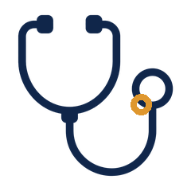
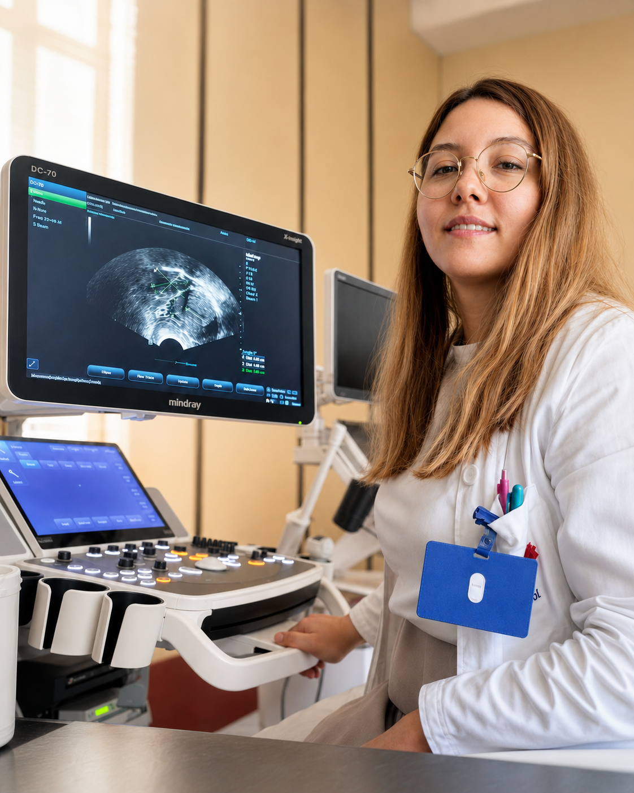

My story
Medicine drew me in early - not only because of science, but because of people. I became a medical doctor in 2017, and during my studies I was recognized as one of the top students of my generation. That period shaped the way I still approach medicine today: with discipline, curiosity and a deep respect for every patient’s story.
Gynecology and obstetrics became the field where everything came together for me - clinical precision, communication, trust, women’s health, family, fear, hope and some of the most important moments in a person’s life.
In May 2025, I became a specialist in gynecology and obstetrics. It was not an ending, but a beginning - the point where years of studying, clinical work and quiet persistence started opening into a new academic and professional direction.
Today, I’m continuing my doctoral studies, developing my research path, improving my languages, learning from experienced colleagues and looking for opportunities to grow through meaningful professional exchange.
